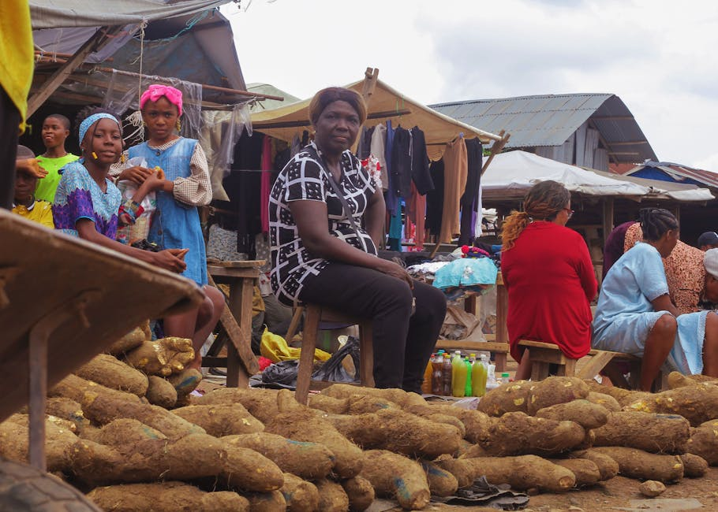

Using local-language AI advise women in DRC on land ownership - Haki des femmes

Haki will leverage voice technology to provide access to legal information and support for women in Katanga and Lualaba provinces of the Democratic Republic of Congo to ensure they have the right to access, use, inherit, control, and own land. Majority of women in DRC often lose their access to land after the passing of a loved one or husband due to lack of knowledge of land rights. This solution will help women to access information and legal support in securing their land rights in Kiswahili. This was part of a Mozilla innovation challenge supporting people and projects across East Africa who leverage Common Voice’s open-source voice data set to unlock social and economic opportunities. These grants help to advance the use of open-source voice data for products that support community participation and engagement.
Data characteristics
[Auto-enriched from linked project resources]
Haki des Femmes is an Android app by Core23lab providing legal information on land ownership rights for women in the Katanga and Lualaba provinces of DRC. Content is in Kiswahili. Covers rights to access, use, inherit, control, and own land. The app uses voice technology for interaction. Data safety: does not share data with third parties; personal data encrypted in transit; users can request data deletion. Available for all ages on Google Play.
Source: https://play.google.com/store/apps/details?id=org.core23lab.hdf
Model characteristics
[Auto-enriched from linked project resources]
Haki des Femmes is a voice-enabled Android application by Core23lab. Users speak queries in Kiswahili about land ownership rights, and the app returns relevant legal information and guidance. Designed for women in the Katanga and Lualaba provinces of DRC who risk losing land access after the death of a family member. Developer contact: devs.core23lab@gmail.com.
Source: https://play.google.com/store/apps/details?id=org.core23lab.hdf
How to use
[Auto-enriched from linked project resources]
Haki des Femmes is a ready-to-use voice-enabled chatbot app that provides women in the Democratic Republic of Congo with accessible legal information about land ownership rights. It operates in Congolese Swahili (Kiswahili) and can be downloaded directly from the Google Play Store by searching for "Haki des femmes."
The app is designed for community organizations, legal aid providers, and development practitioners working on women's land rights in the DRC's Katanga and Lualaba provinces. Many women in these communities are unaware of existing laws that allow them to own land, face barriers to proper documentation, or lack legal marriages that would confer inheritance rights. The chatbot simplifies this legal information through a voice interface, helping women understand the concrete steps needed to secure land ownership -- including the process of legalizing marriages as a prerequisite for land rights.
Development practitioners can use Haki des Femmes as a model for building similar legal information tools in other contexts. The approach of combining voice technology with local-language legal guidance could be adapted for other jurisdictions or legal domains where access to legal literacy is a barrier.
Haki des Femmes was developed by Core23Lab as part of Mozilla's 2023-24 Common Voice Kiswahili program, which funds projects using Kiswahili voice technology to support marginalized groups in Kenya, Tanzania, and the DRC. The team conducted surveys of women in Katanga and Lualaba provinces to identify specific knowledge gaps about land ownership before designing the chatbot, an approach worth replicating in similar projects. More background on the project rationale is available on the Mozilla Foundation blog.
Known limitations: The app is specific to DRC land law and Congolese Swahili and is not directly applicable to other countries or legal systems. Voice-based interaction requires a smartphone with a microphone and internet access.
Sources:
- https://play.google.com/store/apps/details?id=org.core23lab.hdf
- https://www.mozillafoundation.org/en/blog/lifting-up-women-through-land-ownership/
Use cases
Additional resources
About
Powered by / Provided by: Core23Lab
Catalyzed by: Mozilla Foundation & FAIR Forward - AI for All, GIZ
Financed by: Gates Foundation & BMZ
Authors: Balthas Seibold / Daniel Brumund
Contact: Core23Lab (engage@core23lab.org)